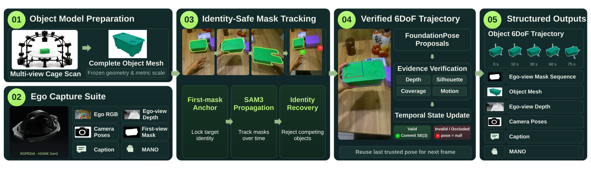
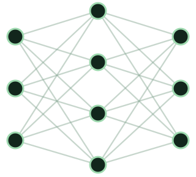

TASK COVERAGE
Task distribution
270tasks
- Single-area 49.0%
- Cross-room 33.8%
- Outdoor 17.2%
Learning World-Grounded Egocentric Representations
from Human Experience

TASK COVERAGE
CAPTURE SETTINGS
OBJECT DIVERSITY

1.2B parametersMesh motion is anchored to the first-frame asset pose.